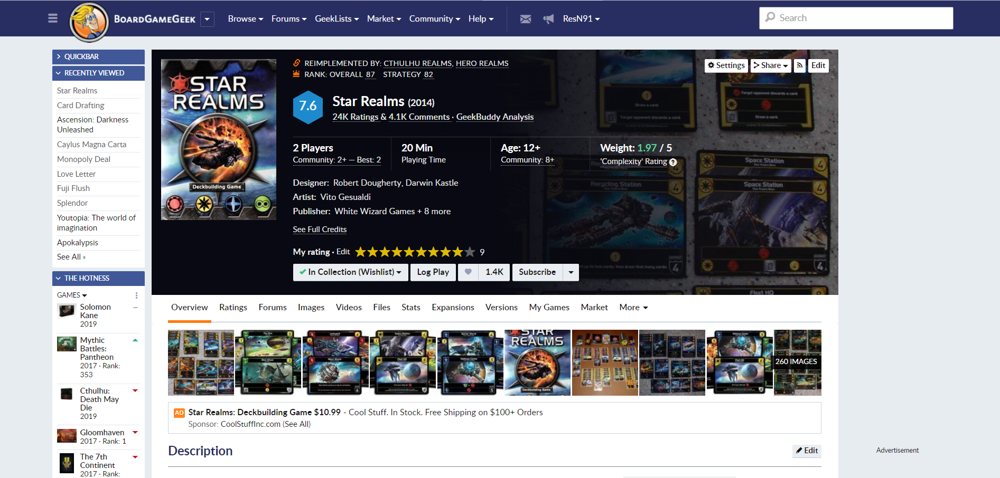
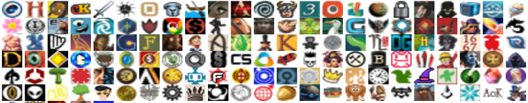
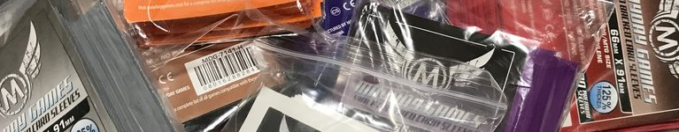

Per chi non lo conoscesse, BoardGameGeek è una delle principali risorse per il giocatore da tavolo. In effetti, si potrebbe dire che questo sito Internet viene considerato LA principale risorsa del giocatore appassionato.
Il portale, lanciato nell’ormai lontano 2000, contiene una mole sconfinata di informazioni che va a coprire praticamente tutto lo scibile ludico: volete sapere qual è il numero ideale di giocatori per una partita a Carcassonne? Quante e quali bustine vi servono per proteggere le carte di Scythe? BGG ha quasi sicuramente la risposta che cercate.
C’è solo un piccolissimo problema: dove diavolo si trovano queste informazioni??
Il 2000 era la preistoria di Internet e guardando il sito... diciamo che i suoi anni non li porta benissimo. Il sito è grezzo e datato: quando lo si naviga, si sente distintamente un odore di fossile frammisto alla passione dei pochi ludoamatori che lo hanno fatto nascere diciotto anni fa. Senza dubbio una manna, per i paleontologi che si aggirano sulla Rete. Un po’ meno per chi non ha tempo per avviare uno scavo in cerca del piccolo dettaglio di cui ha bisogno tra gli strati di informazioni che si sono sedimentati col tempo nel sito.
La scarsa leggibilità del portale, a onor del vero, è un problema noto anche a chi lo gestisce: un po’ alla volta, gli amministratori si stanno mettendo sotto per rendere tutto più navigabile senza far lacrimare sangue ad ogni ricerca. Tuttavia, il processo di rinnovamento è abbastanza lento e la usability del portale resta lacunosa. Improvvisare una ricerca senza una guida potrebbe essere fin troppo snervante per chi ha bisogno di feedback immediati.
Pertanto, noi di Ludimus abbiamo pensato di offrirvi questa mini-guida per aiutarvi a destreggiarvi in questo Jurassic Park del web ludico. Sentitevi liberi di consultarla ogniqualvolta la struttura antidiluviana del sito vi metta a dura prova.

Per prima cosa cominciamo ad ambientarci con le pagine con le quali si ha più spesso a che fare: quelle dedicate ai singoli titoli.
Per ogni gioco da tavolo mai venuto al mondo, esiste infatti una pagina dedicata che riporta tutte le informazione di base e fornisce collegamenti ad ulteriori risorse utili a soddisfare quasi ogni genere di curiosità.
Fortunatamente, queste sono le pagine che per prime hanno giovato di un più che necessario restyling ed ora sono molto più approcciabili. Ciascuna riporta in alto un riquadro con l’immagine di copertina del gioco, il titolo, il voto assegnato dagli utenti, e le informazioni essenziali che lo riguardano, come numero di giocatori, durata, età consigliata, e il peso.

Riguardo il voto, che è un classico “da 0 a 10”, si può dire che un gioco con un voto superiore al 7 è sicuramente ben fatto, ma non è detto che faccia per tutti (molti giochi con voti alti sono della categoria cinghialoni). Una curiosità è che i voti si possono esprimere con precisione arbitraria perché se decidete che Kingdomino si merita un 7.832627441487019 ne avete tutti i diritti.
I voti, raccolti tra migliaia di utenti, permettono di stilare una classifica dei giochi: oltre alla classifica generale, BGG offre anche la possibilità di vedere le classifiche divise per categorie o ambientazioni: sopra al titolo, nella pagina del gioco, si può trovare infatti anche la sua posizione nelle classifiche che gli competono.
La misteriosa voce peso indica la complessità del gioco, considerando parametri quali: la difficoltà del regolamento, la durata di una partita, lo sforzo mentale necessario per giocare, il tempo necessario ad acquisire familiarità con le meccaniche, quanta influenza ha la fortuna nell’esito di una partita, ecc...
Questo valore è calcolato sulla media dei voti degli utenti, espressi con un numero da 1 a 5, dove 1 indica un gioco molto leggero, che scorre rapido e senza sforzo, mentre 5 è uno spaccacervelli interminabile. Letteralmente. Un 5 tondo è Taikyoku Shogi, parente giapponese degli scacchi con 402 pezzi per giocatore, di 209 tipi diversi, su una scacchiera di 1296 caselle. Credo non ci sia bisogno di aggiungere altro.
Ma torniamo a noi: una informazione utile e interessante che BGG fornisce riguardo al numero di giocatori è che, oltre al range ufficiale riportato sulla scatola, troviamo anche i suggerimenti della community su quale numero di partecipanti rende una partita apprezzabile e non solamente giocabile, e addirittura indicando anche il numero ottimale di persone necessario per godersi appieno il gioco.
Scendendo nella pagina si trova una descrizione che può essere più o meno utile per capire ambientazione e dinamiche del gioco. Nel dubbio, il riquadro Classificazione sulla destra mette questi elementi nero su bianco, indicando direttamente le tematiche e i meccanismi di base del gioco.
Certo, per sfruttare al meglio queste informazioni è comunque necessaria un po’ di esperienza: il gergo utilizzato è a volte vagamente oscuro e ostile. Insomma, difficilmente un neofita potrà dare un significato preciso a un termine come “Variable Player Powers”. Fortunatamente, ogni termine nasconde un link che può essere visitato per approfondire il tutto. Se poi volete approfondire le varie tipologie di giochi, noi di Ludimus siamo sempre a disposizione!
Ancora più giù c’è una sezione video che offre un modo rapido per conoscere il gioco: recensioni, unboxing, spiegazioni delle regole, playthrough.
Ovviamente, dato il pubblico internazionale del sito, saranno quasi esclusivamente video in lingua inglese, ma le eccezioni non mancano, poiché gli utenti possono suggerire video da aggiungere a questa sezione.
La sezione “forum”, in cui spesso si trovano discussioni sull’interpretazione di alcune regole o proposte di house rules e varianti, è la sezione dedicata alla discussione e alla comunità attiva del gioco. Ma la cosa più bella è che non è raro trovare gli autori stessi del gioco rispondere direttamente alle domande poste dai giocatori!
Infine, nella sezione dei file si possono trovare altre cose interessanti, come regolamenti in varie lingue (utilissimi per vedere i dettagli del gioco prima di acquistarlo, o avere una traduzione per giochi comprati sottoprezzo nella versione danese), risposte alle domande più frequenti (le famose FAQ), o anche espansioni “print and play” da stamparsi in casa.
Se ci si registra al sito (operazione completamente gratuita), si può anche dare un voto a ciascun gioco ed aggiungerlo alle proprie collezioni direttamente dalla sua pagina.
La collezione più importante per ogni giocatore è ovviamente la lista dei giochi in proprio possesso, ma sono già predisposte diverse wishlist per annotarsi i giochi che si vorrebbero provare, comprare, ottenere in cambio di altri o che si sono già ordinati (per esempio partecipando ad un crowdfunding su un sito come Kickstarter), o ancora giochi che vorremmo vendere o scambiare, o che abbiamo avuto in passato. Inoltre, a ciascun gioco si possono aggiungere dettagli personali come il prezzo pagato, dove e quando è stato acquistato, quale edizione, commenti privati di ogni genere.
Inutile poi aggiungere che, una volta entrati nella community di BGG, si può partecipare alle discussioni nei forum, contribuire suggerendo immagini, file ed altre risorse, e molto altro.

Una iniziativa interessante e sconosciuta ai più è una serie di concorsi, solitamente legati all’uscita di nuovi giochi, sponsorizzati direttamente dalle case editrici.
A questa pagina si possono trovare tutti i contest attivi di questo genere, ai quali si partecipa solitamente rispondendo ad un mini quiz sul gioco in questione: più risposte corrette corrispondono a maggiori chance di vincere.
Quasi sempre le risposte si possono trovare già nella pagina BGG del gioco o su quella della campagna Kickstarter (eventualmente) collegata, o guardando qualche videorecensione suggerita.
Queste simpatiche trovate pubblicitarie mettono in palio una o più copie del gioco anche in versione deluxe, e le versioni più succulente offrono dei gustosissimi bundle di giochi (e vari premi di consolazione).
Tra l'altro, la partecipazione a questi contest dà spesso diritto ad un microbadge dedicato, ossia ad una icona da poter aggiungere al proprio profilo BGG. Queste icone sono una specie di status symbol all’interno della community di BGG e danno la possibilità di esprimere le proprie passioni a colpo d’occhio, avendo a disposizione 5 slot da riempire scegliendo tra una quantità sconfinata che spazia tra categorie quali: giochi da tavolo (ovviamente), sport, musica, scienza, letteratura, film... Ogni anno BGG regala dei buoni per acquistarne qualcuno, gli altri si pagano con il GeekGold, la moneta virtuale di BGG spendibile per personalizzare il proprio avatar, dare mance agli utenti che ci sono stati d’aiuto, rimuovere le pubblicità.
Questa valuta si può comprare donando denaro per il supporto del sito o guadagnare contribuendo alla comunità suggerendo o valutando file ed immagini da aggiungere alle pagine dei giochi.
Altra feature che richiede GeekGold è la formazione di una gilda, in cui un gruppo di utenti può unire le proprie collezioni, avere discussioni più private, programmare eventi e simili. Ludimus ha la sua gilda che riunisce gli organizzatori in maglietta puffosa.

Una preziosissima risorsa offerta da BGG per i collezionisti di giochi da tavolo è la guida alle bustine: per ogni gioco, la pagina indica quante carte contiene, separandole per dimensione ed indicando anche le bustine adatte a proteggerle divise per marca. Per chi ci tiene a proteggere i propri giochi, questa guida offre tutte le informazioni necessarie per acquistare le protezioni nelle dimensioni e quantità corrette.
Molti amanti dei giochi da tavolo preferiscono giocare a tanti titoli diversi piuttosto che fossilizzarsi sui soliti noti. Questo atteggiamento comporterebbe però un continuo acquistare, ma visto che sia lo spazio che il portafoglio del giocatore medio non sono illimitati, il baratto diventa spesso una soluzione appetibile.
Lo scambio di giochi permette infatti di provare nuovi titoli disfandosi di quelli a cui si è giocato alla nausea o che non ci hanno convinto appieno, evitando che se ne stiano a prendere la polvere in libreria.
Su BGG ci sono molte opportunità di fare scambi e compravendite, ma in particolare offre anche uno strumento diverso e assai potente (anche se talvolta un po’ ostico): la math trade, che permette di mettere in piedi complicati scambi a catena tra giocatori.
Solitamente queste math trade sono collegate a degli eventi (fiere, manifestazioni, raduni...) in cui si riuniscono giocatori da diverse aree geografiche che in tale occasione possono effettuare scambi di persona, evitando così onerose spese di spedizione.
Il principio alla base di questi scambi è un’ottimizzazione dei flussi di giochi tra un utente e l’altro combinandoli fra loro: ogni partecipante indica cosa vorrebbe avere e che cosa è disposto a dare in cambio, quindi un algoritmo combina queste informazioni e determina quali scambi possono andare a buon fine.
Il bello è che, se si è disposti a dare Catan in cambio di Clank, l’affare potrebbe lo stesso concludersi anche se nessun utente singolo è disposto a fare lo scambio contrario. Questo perché, combinando le varie richieste, si potrebbe finire con il consegnare Catan a Tizio e ricevere Clank da Caio, che invece riceverà qualcosa di più interessante per lui. Viva la matematica!
Per concludere suggerisco a tutti gli utenti di Telegram (che OVVIAMENTE ci seguono sul nostro canale) @bggthebot: si tratta di un cosiddetto inline bot che permette di cercare un gioco nel database BGG in una qualsiasi chat.
Basta scrivere l’username del bot all’inizio di un messaggio assieme a cosa si sta cercando e, selezionando un risultato tra quelli proposti, si avrà una rapida panoramica del gioco con tutte le info di base ed un comodo link alla sua pagina su BGG. Anche se non siete pratici non disperate: se date il comando “/start” al bot, esso vi fornirà tutte le indicazioni necessarie, compreso un bel video di esempio!